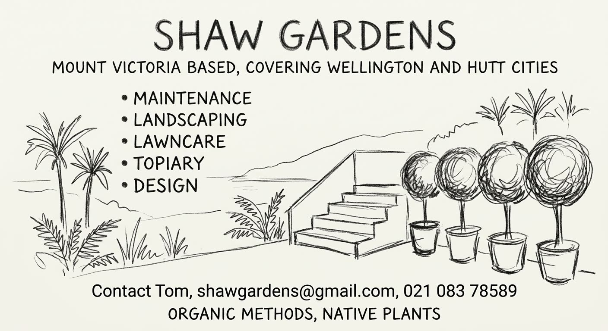

Mount Victoria based, covering Wellington and Hutt Cities

Organic methods, native plants
Projects
Five kinds of garden work, for Wellington and Hutt Cities.
Maintenance
Ongoing care of a garden already in the ground: weeding, pruning, clearing, and keeping beds in order through the seasons. The work uses organic methods.
Landscaping
Laying out and planting a garden: beds, edges, and the plants that fill them, including native plants.
Lawncare
Mowing, edging, and the regular care of lawns, done with organic methods.
Topiary
Clipping and looking after plants trained into a clear shape, such as hedges and rounded forms.
Design
Planning where a garden sits and what is planted in it. Organic methods and native plants guide the choices.
Documented work
No documented projects yet.
About
Shaw Gardens is based in Mount Victoria and covers Wellington and Hutt Cities.
The work is maintenance, landscaping, lawncare, topiary, and design. Methods are organic, and the planting favours native plants.
Talk to Tom about a garden.
Contact
For garden work in Wellington and Hutt Cities, contact Tom.
- Name
- Tom
- shawgardens@gmail.com
- Telephone
- 021 083 78589
- Based
- Mount Victoria, covering Wellington and Hutt Cities